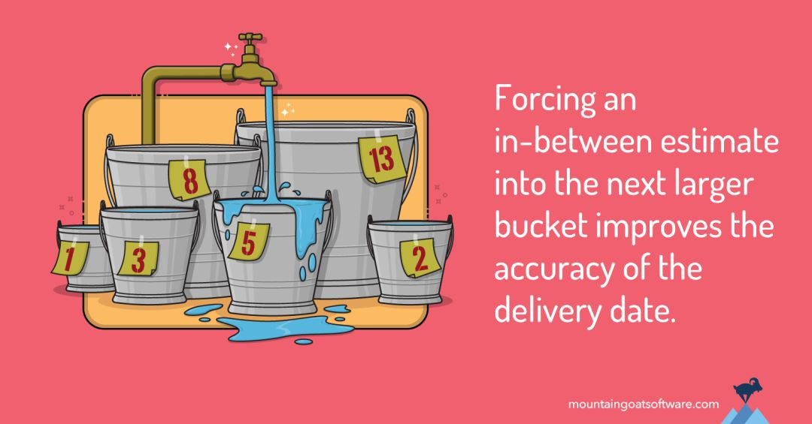

第10讲 Mike Cohn 谈敏捷估算：使用「水桶方法」估算工作量

图源Mike Cohn博文，版权归原作者所有。
译注：用户故事点估算为什么不可能精确？除了“规划扑克”，还有什么有效的估值方法和策略？本文讨论的“水桶方法”解答了这几个问题。原文来自敏捷先驱之一Mike Cohn的博客文章：Story Point Estimates: For Accuracy, Use Ranges & Round Up。在不影响内容理解的情况下，为简洁起见，译文中许多地方将Product Backlog Item这一英文概念翻译为“用户故事”（或故事，虽然它与故事并不完全是一回事）。
进行故事点估算时，大部分团队会使用某个预先定义的、不包含所有可能情况的数值范围来进行，如团队会使用一个2次幂的序列（1，2，4，8，16，…）、或斐波那契数列（1，2，3，5，8，13，…）来进行这种估算。
通过有意将一些数值排除在可接受的估值范围之外，团队避免了陷入某些无休止的讨论之中。如某个故事到底该估值为15还是16，若真要达到“是15还是16”那样的估算精确度，一般是非常困难和耗时的，通常也不可能完成。
我常遇到有人提出这样的问题：我怎么能确定一个具体的用户故事（Product Backlog Item）估值为8还是13？
这篇文章里，我将尝试用“水桶估值法”来部分解答该问题。
假如你有10升的水要储存，并且你有一个8升的桶和一个13升的桶。你会选择用哪个桶来存储这些水？
显然，你会选择13升的那个桶。10升水没法装进8升的桶，水会溢出。
进一步推断，你还会用13升的桶来装入体积在9升到13升这个范围的水。如果你有14升的水，你就需要一个比13升更大的桶了。
这个思考策略与故事点估算是一致的。考虑将每个预设的参考估值作为一个桶，所有体积在这个桶与邻近的小一号桶之间的用户故事都可以用这个”估值桶”（估值范围）来装。例如，许多团队在使用“规划扑克”玩敏捷规划游戏时，会采用一种调整后的斐波那契数列：1、2、3、5、8、13、20、40、100。13这个参考数值，可用于故事点大于8、且小于等于13之间的所有故事的估值。
即，每个故事点估值的隐含意义是一个估值范围–正如一个桶可以存储在其容量范围之内各种体积的水，问题的关键在于如何选择合适的桶。
选择合适的桶
要得到更准确的估算和计划，团队需要转变思路：他们不是在给某个用户故事估一个数值，而是要想办法为这个故事找一个合适的“估值桶”。我知道很多时候人们在做故事点估算时，习惯的做法是拿支笔、为某个用户故事写个数字，但更好的思路应该是找一个能装下这个故事的足够大的数字（桶）。
所以，估算时的推荐做法是：让团队成员想象自己面前有一堆标有数字1，2，3，5，8，13，…(或其他序列)的桶，对每个故事进行估值时，想象着将故事卡片扔进一个大小合适的桶里。
这有助于团队成员脱离“估算要完美和精确”的执念，因为这不可能做到。故事被扔进了合适的桶里，就已经达到估算的要求。
为什么“向上舍入估值法”是有效的？
你可能注意到，这种“向上舍入”（译注：指类似有9点的故事用13点的桶来装，这种做法使得估算都比实际故事点要大，类似四舍五入的做法）的估值方式有可能导致故事点膨胀（inflated or padded schedules）。我解释一下为什么这样的事不会发生。
假如你认为某个故事应该有10点，使用上面提到的斐波那契数列及向上舍入的估值策略，这个故事将被估值为13点。进一步，我们假设这个13点的故事因为太大而没法在一个迭代里完成，所以团队将它分解成3个小的故事，故事点分别为5，5，2。
这里注意数值发生的变化。这3个小故事加起来点数为12，这比前面13点的大故事估值少1点，却比最初大故事的合理估值10点多2点。
通过强行让估值向上舍入的方式，提升了准确预测项目交付日期的可能。
当然，如果你偏要使用“向下舍入”的方式给故事估值为8，项目将会产生4个点的延迟。而当你使用自己认为准确的估值10时，项目将又产生2个点的延迟。
所以，使用水桶方法及向上舍入的估值策略，你更可能按时交付项目。
但10点的故事难道真的不能是8个点吗？当然可能，但它也可能是14点或15点，或其他任何数字。
“水桶方法”和“向上舍入法”是有效的估算工具
“向上舍入估值法”不会导致估值膨胀–我在另一篇博文，“How to Prevent Estimate Inflation”里论述过该问题。相反，“水桶方法”结合“向上舍入法”，是估值不确定性的一种反映。将故事点视为一系列有容量限制的桶正好说明了这种不确定性，有助于制定更合理的项目计划。